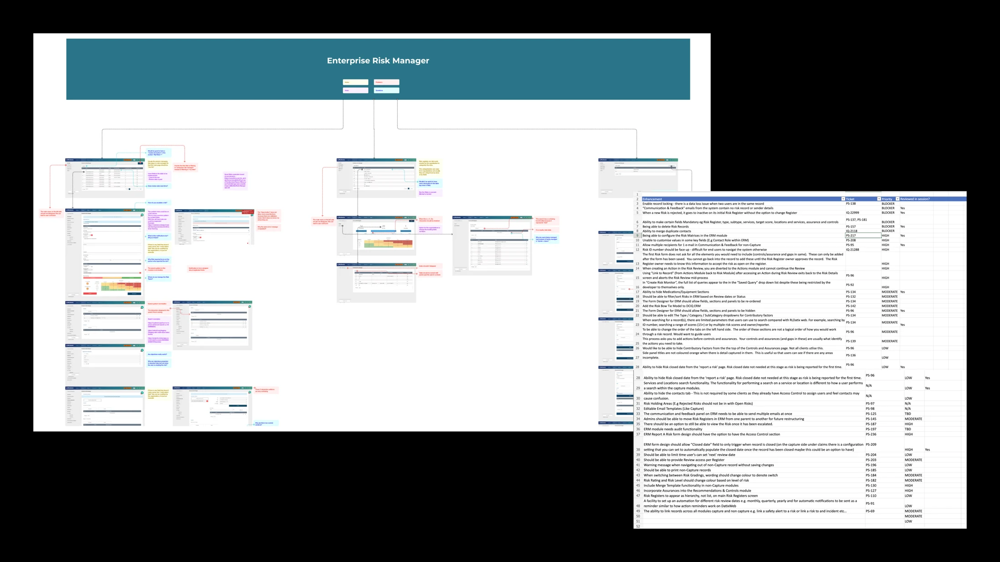
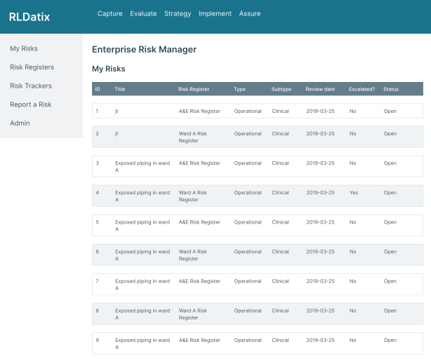
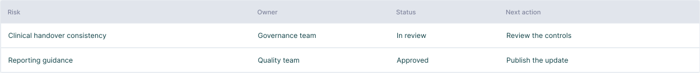

TEAM
Two designers: me and my design manager
RLDatix is a global software company helping healthcare organisations improve patient safety, manage risk and plan their workforce.
During COVID-19, healthcare teams were under intense pressure. As one of two designers at RLDatix, I worked with my design manager to make complex software easier to use. I led the shared design system, redesigned reporting and risk workflows, and tested with healthcare professionals.
Two designers: me and my design manager
Research, interaction design, UI library, usability testing
Product, Engineering, support and clinical experts
Datix Cloud IQ (DCIQ) brought incident reporting, risk management and patient safety into one cloud platform. But legacy tools still had different navigation, search and feedback patterns, making everyday tasks harder to follow.
COVID-19 put healthcare teams under greater pressure. As RLDatix moved towards connected safety and risk management, our challenge was to make these workflows clearer for staff and more consistent across products.
Mixed navigation levels and inconsistent layouts made it difficult for staff to know where they were or what to do next.
Vanishing menus and unclear system responses interrupted tasks and left staff unsure whether an action had worked.
Without shared components, product teams solved the same interface problems separately. We needed patterns they could reuse.

The goal was simple: less time working out what a screen wants you to do. Clearer hierarchy, patterns that behave the same everywhere, and status and actions shown where you need them.

Drag to compare legacy UI with a later public product view. This is a visual comparison across versions, not a like-for-like test of one workflow.
To make our two-person design team’s work go further, I focused on shared patterns: navigation, forms, risk tables and configuration. I worked with Engineering to build a reusable UI library, so improvements could carry across products.
The system brought typography, colour, iconography and interaction states together. It gave design and engineering a common vocabulary for making consistent decisions across products.
A clear hierarchy for dense clinical information.
A shared language across the platform.
Foundations → Components → WorkflowsConsistent action hierarchy and visible outcomes.
Colour roles carried through the product UI.
The same table structure brings together the risk, owner, status and next step.

I combined interviews and usability sessions with healthcare professionals with input from support, Product and clinical experts. This helped separate interface problems from technical constraints and test decisions before implementation.
Renaming “Risk trackers” to “Grouped Risks” might make the feature easier to understand.
Clinicians already understood “Risk trackers”. A new label added confusion rather than clarity.
I kept the familiar term and improved navigation hierarchy and the visibility of risk actions.
The lesson: clearer healthcare software builds on what professionals already know. Simplifying the interface doesn’t always mean changing its language.
Prototype sessions showed where navigation and dashboard content needed work. They also surfaced requests for printing, sharing and a personal dashboard. I used these findings to refine the designs and plan later improvements.
I worked with Product and Engineering on an incremental delivery plan, organised into 2–3 week sprints. We prioritised shared components and the key reporting and risk journeys, checking technical feasibility as we went.
The UI library and tested journeys gave developers a consistent foundation for implementation.
The redesigned risk-management screens went into day-to-day use with customers.
A consistent platform needed more than visual polish: shared component behaviour, practical local configuration and terminology clinicians already understood.
A documented design system covering core interface patterns.
An Icon Wall and configuration journey tested with four major clients.
Risk-management workflows tested with clinicians and carried through to customer use.
In 2020–2021, I helped build a shared UI library and redesigned reporting and risk workflows used by customers.
The screens below show later RLDatix products from 2025–2026, including Intelligence and Workforce. They show the wider platform’s evolution; they are not deliverables from my project.